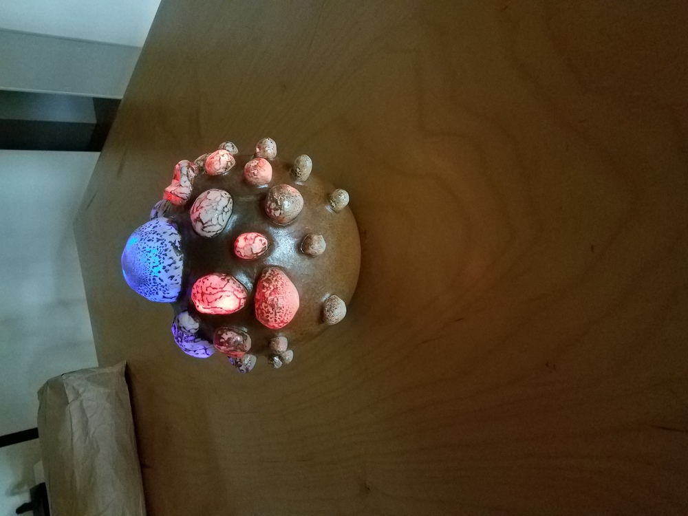

<br>
## Examples of circuitboard modules made this session.
[All files are here.](./Electronics_examples)
Daniel and I worked on several examples of fablab circuitboards that attached to microcontroller modules
to demonstrate some of the basic input/output capabilities. We used Arduino 'nano' and 'micro' boards - $2 to $4 from Amazon or
Ali express. We could also have fabbed our own microcontroller boards. By making the boards simple, we were able to involve one
artist in fabbing and soldering boards. That was gratifying.
___
###Light sensor and single LED.
Phototransistor and LED on the same board. Too close to be a useful demo of a 'night light'
but fun anyway.
<img src="./Electronics_examples/Haystack_light_sensor/light_sensor_bare.jpg" width="300">
<img src="./Electronics_examples/Haystack_light_sensor/light_sensor.jpg" width="300">
[Files here.](./Electronics_examples/Haystack_light_sensor)
<br>
___
###Microphone with RGB LED.
The beloved analog microphone! Circuitboard provides the standard filtered signal, plus a lowpass (~1 sec)
output, to allow differential measurement of signal amplitude. RGB LED can be programmed to respond to
sound level.
<img src="./Electronics_examples/Haystack_mic/sound_sketch.jpg" width="300">
<img src="./Electronics_examples/Haystack_mic/sound+RGB.jpg" width="300">
[Files](./Electronics_examples/Haystack_mic) here.
<br>
___
###Motor board with MOS FET.
Runs a motor in one direction. These FETS are good to 30V, but need diode protection against 'flyback' voltage spikes.
<img src="./Electronics_examples/Haystack_motor/motor_closeup.jpg" width="300">
[Files](./Electronics_examples/Haystack_motor) here.
Here's a [movie. ](./Electronics_examples/Haystack_motor/motor.mp4)
<br>
___
###Six LED board.
Six LEDs attached to microcontroller pins. Blinky thing.
[Files here.](./Electronics_examples/Haystack_nano_six_LED)
[Here's a movie. ](./Electronics_examples/Haystack_nano_six_LED/6LED_blinking.mp4)
<br>
___
###Piezo disc as sensor or speaker.
Attached piezo disc to an analog input pin, with a 1MOhm resistor between the analog in and 3.3V to keep the DC average
at 3.3V. The piezo functions as a sensor or as a buzzer, depending on software-controlled function of pins.
<img src="./Electronics_examples/Haystack_piezo/piezo_closeup.jpg" width="300">
[Files](./Electronics_examples/Haystack_piezo) here.
___
###RGB LED (single RGB_LED board with wire leads, or two RGB_LEDs on one board.)
[Files](./Electronics_examples/Haystack_RGB) here for all RGB boards.
Below is a little board that can be attached where needed. Here we;ve attached to three of the PWM pins on the microcontroller.
<img src="./Electronics_examples/Haystack_RGB/one_RGB_resistors/1xRGB_board_02.jpg" width="300">
[Files](./Electronics_examples/Haystack_RGB/one_RGB_resistors) here for this board.
Below is a board with two (common anode) RGB LEDs. LED cathodes attached to the six PWM pins of the ATMega micro.
<img src="./Electronics_examples/Haystack_RGB/two_RGB_resistors/2xRGB.jpg" width="300">
[Files](./Electronics_examples/Haystack_RGB/two_RGB_resistors) here for this board.
[Here's a movie. ](./Electronics_examples/Haystack_RGB/two_RGB_resistors/2xRGB_random.mp4)
___
###LED circuit on vinyl-cut copper foil
<img src="./Electronics_examples/LEDs_on_copper/2xLLED_copper_foil.jpg" width="300">
[Files](./Electronics_examples/LEDs_on_copper) here.
___
## Collaborations with studio participants.
- <b>Vanna's Pot</b>
Vanna is a potter, TA-ing in ceramics this session. She recently made a stoneware pot with translucent porcelain
bubbles. With us, she installed six RGB LEDs inside the pot. She helped fab the LED boards, soldered on the components, and
built the structure to hold the in place inside the pot. We soldered the RGB boards to two Arduino Nanos, so that each of the
four could fade in and out in all colors. Rob and Daniel wrote the [code](Electronics_examples/Haystack_RGB/Arduino_sketches/fade_test_six_03.txt).
The result is shown below.

[Code](Electronics_examples/Haystack_RGB/Arduino_sketches/fade_test_six_03.txt) for fading two RGB LEDs through all combinations.
[Pictures](./2019figs_haystack/Vanna_LED_pot) here for this project.
- <b>Clay paddle</b>
Shopbot-made clay paddles for two groups in Ceramics studio.
- <b>Dye stamp</b>
Natural dyes studio used shopbot-cut HDPE stamps as dye resist. Mirrored pattern clamped to compress fibers
in regions into which dye did not penetrate.
<img src="./2019figs_haystack/fablab_use/dye_stamp_results.jpg" width="300">
- <b>Embroidery</b>
- <b>Chessboard</b>
- <b>Hammer stamp</b>
Shirt decal made from sketch by one of the metalshop leaders. Many customers for this on the vinyl cutter.
## Other stuff.
### Coat Hooks:
Rob scanned and traced coat hooks from the dining hall, and made ~20 on the shopbot from good 1/2" plywood.
Ben may need more - he wants to make another one for a studio.
[Files](./Coat_hooks) here.
<img src="./Coat_hooks/Shopbot Files/Coathook.png" width="300">